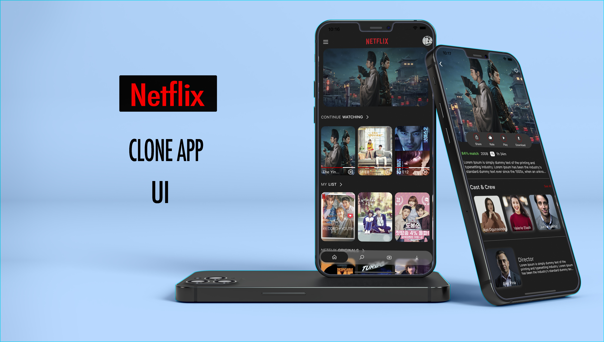
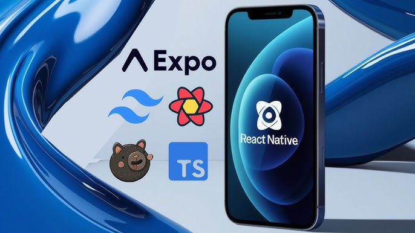
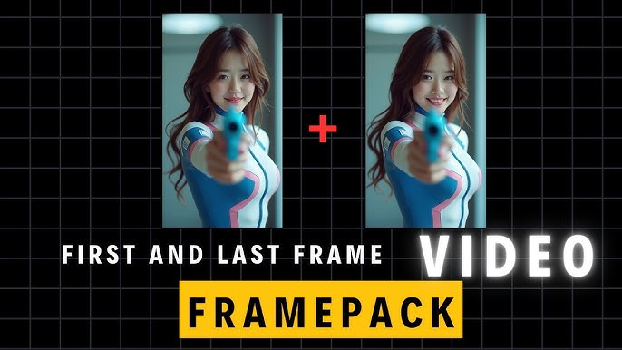
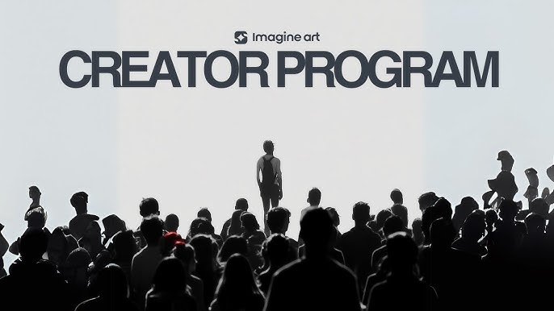
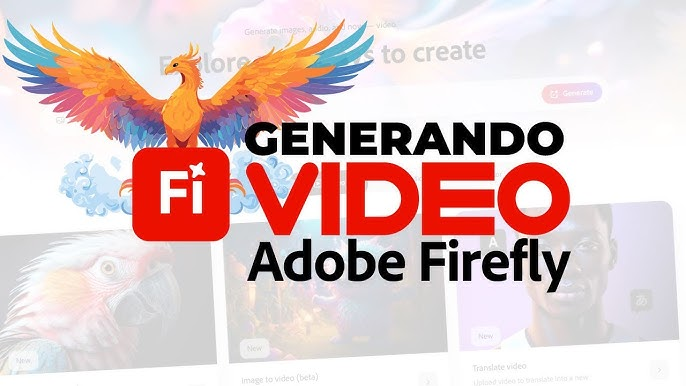

Netflix Clone (React / Flutter)

Replica la interfaz de Netflix usando React o Flutter, integrando
TMDB API, autenticación y diseño responsivo.
App Móvil de Streaming

App nativa en React Native con video en vivo, navegación y estado
global con TypeScript.
Sora — Texto a Video
Genera videos de hasta 60 segundos a partir de texto o imágenes
usando el modelo AI Sora de OpenAI.
FramePack

Genera videos en tu PC con solo 6 GB de VRAM utilizando la
arquitectura FramePack, open-source.
ImagineArt.

Herramienta web que convierte texto en clips de video en pocos
minutos, ideal para storytelling.
Firefly

Genera videos cortos desde texto o imagen dentro de Adobe Firefly,
ideal para integración creativa.